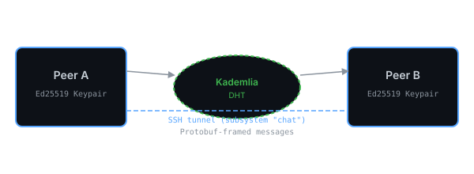

01
Zero Config
mDNS discovers peers on LAN automatically. DHT + peer persistence for WAN. No bootstrap flags needed.
peer-to-peer SSH chat
Peer-to-peer chat with automatic discovery — no server, no sign-up, no config. Your Ed25519 SSH keypair is your identity.
╭──────────────────────────────────╮ │ ● @alice ● online │ │ ○ @bob ○ offline│ │ # dev-group ● online │ ╰──────────────────────────────────╯
[ why it works ]
Peers discover each other automatically via mDNS (LAN) or the Kademlia DHT (WAN). Messages travel over SSH with protobuf framing. No servers, no config.

mDNS discovers peers on LAN automatically. DHT + peer persistence for WAN. No bootstrap flags needed.
Ed25519 SSH keypair is your identity. No usernames, no accounts, no registry.
Reuses well-audited SSH for transport and auth. Subsystem-only, no shell access.
The stack fits on one line at every size.
| command | what it does |
|---|---|
| identity init | generate a new Ed25519 keypair |
| tui | launch TUI with built-in DHT + mDNS + SSH server |
| daemon | headless full node: SSH + DHT + outbox persistence |
| connect <peer_id|addr> | resolve PeerID via DHT or connect to raw IP:port |
| /connect <peer_id> | (in TUI) auto-resolve PeerID via running DHT node |
| contacts · history · outbox · groups | contacts, message history, offline delivery, group chat |
SSH restricted to chat — no shell, exec, or port forwarding.
Trust On First Use. known_hosts file for MITM detection.
Only known peers can connect. No spam.
Local SQLite encrypted. Your data stays yours.